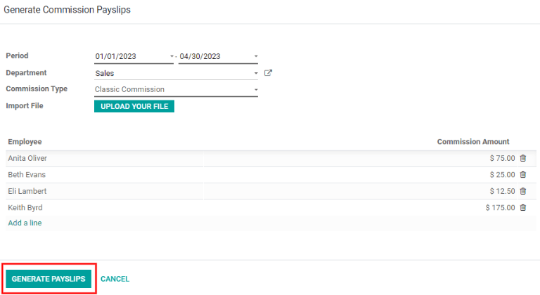

Recibos de nómina¶
Los empleados o sus gerentes se encargan de crear los recibos de nómina y luego los empleados autorizados (por lo general suelen ser los gerentes) deben aprobarlos. Una vez que los recibos están aprobados, se entregan a los empleados y se efectúa el pago mediante cheque o depósito, según la configuración del perfil del empleado.
El menú desplegable Recibos de nómina ubicado en el encabezado de la aplicación consta de tres secciones: Por pagar, Todos los recibos de nómina y Lotes.
Estas tres secciones le proporcionan todas las herramientas necesarias para crear recibos de nómina para los empleados, por ejemplo, recibos individuales, por lote o por comisión.

Por pagar¶
Haga clic en la para ver los recibos que debe pagar. En esta página, Odoo muestra los recibos que aún no han sido generados y puede crearlos desde este tablero.

Cada recibo de nómina incluye el número de referencia del recibo, el nombre del empleado, el nombre del lote, el rango de fechas desde y hasta, la empresa, el salario básico, el salario neto y el estado del recibo de nómina.
Al hacer clic en la entrada de un recibo de nómina aparecerán los detalles correspondientes.
Crear un nuevo recibo de nómina¶
Puede crear un nuevo recibo de nómina desde la página Recibos de nómina por pagar (en la ) o desde la página Recibos de nómina del empleado (en la ) si hace clic en el botón Nuevo que se ubica en la esquina superior izquierda.
Al hacer clic en Nuevo aparece un formulario en blanco para recibo de nómina que debe completar con la información necesaria.
Campos necesarios¶
En el formulario en blanco para recibo de nómina debe completar varios campos, algunos de ellos son obligatorios y están representados por líneas en negrita.

Empleado: escriba el nombre de un empleado o seleccione uno con la lista desplegable. Es posible que cuando seleccione un empleado se completen otros campos del formulario de forma automática. Por lo general, después de elegir a un empleado en el campo correspondiente, Odoo puede completar los campos Contrato, Estructura y Nombre del recibo de nómina, pero solo si esa información está disponible en el formulario de ese empleado en la aplicación Empleados.
Periodo: haga clic en la fecha predeterminada para abrir el calendario emergente. Use los iconos < (menos que) y > (más que) que aparecen en el calendario para elegir un mes, luego haga clic en un día para seleccionar esa fecha específica como la fecha de inicio del recibo de nómina. Repita este proceso para agregar una fecha de finalización en el siguiente campo.
Contrato: seleccione el contrato correspondiente para el empleado con el menú desplegable. Solo aparecerán como opciones los contratos disponibles para el empleado seleccionado.
Estructura: seleccione el tipo de estructura salarial con el menú desplegable. Solo aparecerán como opciones las estructuras salariales disponibles para el contrato seleccionado de ese empleado en específico.
Nombre del recibo de nómina: escriba el nombre para el recibo de nómina en el campo vacío. El nombre debe ser breve y descriptivo, por ejemplo,
Abril de 2023.Empresa: seleccione la empresa a la que aplica el recibo de nómina con el menú desplegable Empresa, está ubicado en la pestaña Información contable.
Diario de salarios: elija el diario de salarios en el cual se reflejará el pago en la pestaña Información contable. Debe estar en la aplicación Contabilidad.

Importante
Le recomendamos que verifique los datos con el departamento de contabilidad para garantizar que cada entrada que influye en la aplicación Contabilidad sea correcta.
Campos opcionales¶
Referencia: aquí puede escribir cualquier nota o mensaje de referencia para la nueva entrada.
Automóvil de la empresa: en caso de ser necesario, seleccione el vehículo de la empresa en el menú desplegable.
Días trabajados: en la pestaña Días trabajados y entradas, las entradas que están en días trabajados (como Tipo, Descripción, Número de días, Número de horas y Cantidad) se completan de forma automática con la información de los campos Periodo, Contrato y Estructura del formulario del recibo de nómina.
Cálculo del salario: la pestaña Cálculo del salario se completa de forma automática luego de hacer clic en el botón Calcular hoja. Después, aparecen todos los salarios, deducciones, impuestos y otros datos correspondientes.
Nombre del lote: seleccione el lote de recibos al que pertenece este nuevo recibo de nómina con el menú desplegable. Esto se encuentra en la pestaña Información contable.
Fecha contable: esta parte se encuentra en la pestaña Información contable. Proporcione la fecha en que se debe registrar el recibo de nómina, haga clic en el menú desplegable y vaya al mes y año correctos con los iconos < > (menos que y más que) en el calendario emergente. Seleccione la fecha correcta.
Diario de salarios: este campo está ubicado en la pestaña Información contable y es el diario en el que se registrarán los recibos de nómina. Se selecciona en automático al ingresar el contrato y la estructura en el formulario correspondiente.
Asiento contable: este campo se ubica en la pestaña Información contable y se completa de forma automática una vez que confirma el recibo de nómina.
Guardar y procesar un nuevo recibo de nómina¶
Una vez que haya ingresado toda la información necesaria en el recibo de nómina, haga clic en Guardar para almacenar los datos. También puede hacer clic en Cancelar si desea eliminar la entrada.
Nota
No es necesario que guarde la entrada antes de calcular la nómina aunque se considera una buena práctica hacerlo. Puede hacer clic en el botón Calcular hoja sin necesidad de guardar primero el recibo de nómina, pues al hacerlo guardará la entrada y se calculará la nómina.
Haga clic en el botón Calcular hoja para registrar toda la información y completar la pestaña Cálculo de salario. En caso de que deba realizar modificaciones, haga clic en el botón Editar, haga los cambios y luego haga clic en el botón Recalcular días trabajados para que los cambios aparezcan en las pestañas Días trabajados y Cálculo de salario.
Haga clic en el botón Imprimir para imprimir el recibo de nómina. Para cancelarlo, haga clic en el botón Cancelar recibo de nómina.
Una vez que todos los datos en el formulario del recibo de nómina son correctos, haga clic en el botón Crear borrador para crear el recibo. El chatter se actualizará en automático y aparecerá el correo electrónico que se envió al empleado, junto con una copia en PDF del recibo de nómina.
Lo que debe hacer a continuación es enviar el pago al empleado. Haga clic en el botón Realizar pago, aparecerá un formulario emergente en el que debe seleccionar el Diario bancario correspondiente en donde se recibe el pago desde un menú desplegable. Luego, haga clic en el botón Confirmar para confirmar el diario y volver al recibo de nómina.

Si necesita cancelar o reembolsar un pago, haga clic en los botones Reembolso o Cancelar recibo de nómina. Estos botones están ubicados en la parte superior del formulario.
Importante
Para poder hacer el pago de una nómina, el empleado debe tener una cuenta bancaria en su información de contacto. Si no hay información bancaria, no podrá recibir su salario y aparecerá un error al hacer clic en el botón Realizar pago. La información bancaria está disponible en la pestaña Información privada de la tarjeta del empleado. Edite la tarjeta del empleado y, en caso de que sea necesaria, agregue la información bancaria.

Todos los recibos de nómina¶
Para ver todos los recibos de nómina sin importar el estado que tengan, vaya a la aplicación . Aquí aparecerán todos los recibos de nómina organizados por lote en una vista de lista predeterminada.
Haga clic en el icono ▶ (flecha) junto al nombre de uno de los lotes para ver todos los recibos de nómina dentro de ese lote y sus respectivos detalles. El número de recibos está escrito entre paréntesis después del nombre del lote. El estado de cada recibo de nómina se encuentra del lado derecho e indica si está en borrador, en espera o si está listo.
Nota
El estado de Borrador indica que creó el recibo de nómina y que aún puede realizar modificaciones, pues los importes todavía no se han calculado.
Si se encuentra en el estado
En espera, entonces ya se calculó el recibo de nómina y los detalles salariales están disponibles en la pestaña Cálculo del salario.Listoindica que el recibo de nómina ya está calculado y se puede pagar.

Haga clic en un recibo de nómina individual para ver los detalles en una página por separado. Use el menú de migas de pan y haga clic en Recibos de nómina del empleado para volver a la vista de lista de todos los recibos de nómina.
Puede crear un nuevo recibo de nómina desde la página de Recibos de nómina con el botón Crear que se ubica en la esquina superior izquierda. Al hacerlo, aparecerá un formulario por separado en blanco para un nuevo recibo, donde deberá ingresar toda la información necesaria como se especifica en la sección Crear un nuevo recibo de nómina.
Para imprimir la versión en PDF de los recibos de nómina, vaya a Recibos de nómina por pagar o Recibos de nómina de los empleados y seleccione los recibos que desee haciendo clic en las casillas individuales junto a cada recibo. También puede hacer clic junto a la casilla junto a Referencia y así seleccionará todos los recibos de nómina visibles en la página. Luego, haga clic en Imprimir para imprimir los recibos de nómina.

También puede exportar los recibos de nómina a una hoja de cálculo de Excel. Al hacerlo, todos los recibos se exportan sin importar si algunos están seleccionados o no. Haga clic en el botón Exportar todo (icono de descargar) para exportar todos los recibos de nómina a una hoja de cálculo de Excel.

Nota
Tanto Por pagar como Todos los recibos de nómina muestran toda la información detallada para cada recibo de nómina.
Lotes¶
Para ver los recibos de nómina por lotes, vaya a para mostrar todos los lotes de los recibos de nómina que se han creado. De manera predeterminada, estos lotes aparecen en una lista.
Cada lote muestra el Nombre, las fechas Desde y Hasta, si es una Nota de crédito, su Estado y la Empresa.

Haga clic en un lote individual para ver los detalles de ese lote en una página por separado, donde también podrá modificarlo. Para ello, haga clic en Editar y luego haga los cambios que desee.
Cuando termine de editarlo, haga clic en Guardar para guardar los cambios, o en Descartar para recuperar los datos originales.
Después de guardar las modificaciones, haga clic en Recibir recibo de nómina para que aparezca un formulario emergente, en donde podrá crear o modificar los recibos de nómina afectados.
Todos los recibos de nómina asociados con el lote aparecen en la sección de empleados del formulario emergente de Generar recibos de nómina. Para filtrar los resultados por Estructura salarial y/o Departamento, seleccione una estructura salarial y/o departamento de los respectivos menús desplegables.
Solo los empleados que coincidan con la Estructura salarial y/o el Departamento aparecerán en la lista de empleados. Haga clic en el botón Generar que se ubica en la parte inferior de la ventana emergente de Generar recibos de nómina para generar los recibos modificados, y cierre la ventana emergente.

Al volver a la página de detalles del lote, haga clic en el botón inteligente Crear un asiento en estado de borrador para crear un borrador de los recibos de nómina.

Una vez creados los borradores de los recibos de nómina, haga clic en el botón que cambiará a Realizar pagos. Aparecerá una ventana emergente en donde deberá ingresar información del diario bancario. Seleccione el Diario bancario desde la lista desplegable y haga clic en Confirmar para procesar el recibo de nómina, y realice el pago a sus empleados.
En la página de detalles del lote, podrá ver el número de recibos de nómina en los lotes y los recibos individuales para un lote a través del botón inteligente Recibos de nómina que se ubica en la parte superior derecha.
Utilice las migas de pan para volver a la página de detalles de un lote individual, o a la lista de todos los lotes.
Crear un nuevo lote¶
Para crear un nuevo lote de recibos de nómina desde la página de Lotes de recibos de nómina (), haga clic en el botón Crear que se ubica del lado superior izquierdo. De esta forma, aparecerá un formulario en blanco para un lote de recibos de nómina en una página por separado.
En el nuevo formulario para un lote de recibos de nómina, escriba un Nombre para el lote y seleccione el rango de fechas para el cuál aplicará dicho lote con el icono ▼ (flecha desplegable) en el campo Periodo, que mostrará una ventana emergente con un calendario. Desde aquí, vaya al mes que desee y haga clic en el día correspondiente tanto para la fecha de inicio como para la fecha de finalización.

Si el lote es una nota de crédito, seleccione la casilla junto a Nota de crédito. Luego, en el campo Fecha de generación, seleccione la fecha en la que se deben generar los recibos de nómina desde la ventana emergente con el calendario. Esta fecha se verá reflejada en los asientos contables.
Por último, en el campo Empresa, seleccione la empresa contra la que se emiten estas nóminas.
Cuando toda la información del formulario para el lote de recibos de nómina esté correcta, haga clic en Guardar para guardar la información. Para eliminar el asiento, haga clic en Descartar.
Para crear los recibos de nómina para el nuevo lote, haga clic en el botón Generar recibos de nómina ubicados en la parte superior del formulario.
Al hacer clic sobre él, aparecerá una ventana emergente con todos los recibos de nómina que se crearán. Para eliminar cualquier recibo de nómina individual, haga clic en el icono ✖ (tache) en la extrema derecha de la línea del recibo de nómina.
Si desea especificar una Estructura salarial o un Departamento para el lote, selecciónelo desde el menú desplegable correspondiente.
Haga clic en el botón Generar en la parte inferior de la ventana emergente para crear los recibos de nómina para el lote.

Nota
En la ventana emergente de Generar recibos de nómina, solo aparecerán los recibos de nómina que cumplan con esos parámetros específicos al seleccionar un departamento o una :guilabel:`estructura salarial.
Si se generan errores o problemas que no permiten que se generen los recibos de nómina, aparecerá un mensaje de error en la parte superior de la sección. Este mensaje desaparecerá después de algunos segundos o puede hacer clic en el icono ✖ (tache) para cerrarlo.
Para solucionar el problema, haga las modificaciones necesarias (por ejemplo, eliminar cualquier línea del recibo de nómina que no se pueda procesar), luego haga clic de nuevo en el botón Generar.
Una que vez que los recibos de nómina se generen con éxito, la pantalla regresa al formulario del lote de los recibos de nómina.
Desde aquí, haga clic en el botón Generar asientos en estado de borrador para cambiar el estado de los recibos de nómina de Borrador a Hecho.
Una vez que se generan los recibos de nómina, haga clic en el botón Realizar pago para procesar los pagos. Al hacerlo, aparecerá una ventana emergente en donde deberá ingresar la información bancaria correcta. En esta ventana emergente, seleccione el Diario bancario desde el menú desplegable y escriba el nombre del archivo adecuado.
Al terminar, haga clic en el botón Confirmar para confirmar la información o haga clic en Cancelar para descartar.
Generar recibos de nómina para comisiones.¶
Los recibos de nómina de comisiones directamente desde la página Lotes de recibo de nómina (). Para generar los recibos de nómina de comisiones desde esta página, haga clic en el lote (o lotes) para los que desee crear recibos de este tipo, luego, haga clic en el botón Generar recibos de nómina de comisión.
Al hacerlo, se abrirá una ventana emergente para Generar recibos de nómina de comisión en donde deberá ingresar la información necesaria.
En esta ventana emergente, haga clic en el menú desplegable que se ubica junto al campo Periodo para abrir una ventana emergente con un calendario. Aquí podrá seleccionar el periodo que desee en el que se generarán los recibos de nómina. Use las flechas < (izquierda) y > (derecha) para ir al mes correcto y seleccionar la fecha.
En el campo Departamento , seleccione el correspondiente con el menú desplegable.
Cuando selecciona un departamento, los empleados de ese departamento aparecerán en la sección de Empleados.
En la sección de Empleados, seleccione el Importe de la comisión para cada empleado en la columna correspondiente. Para quitar a un empleado, haga clic en el icono de 🗑️ (papelera) para eliminar la línea.
Agregue un nuevo asiento haciendo clic en Agregar línea e ingrese el Empleado y el Importe de la comisión.
Si es necesario, haga clic en el botón Suba su archivo para agregar uno. Todos los tipos de archivo con compatibles.
Use el menú desplegable junto al campo Tipo de comisión, seleccione Comisión clásica o Garantía. La Clásica es el tipo más común de comisión, mientras que Garantía se usa principalmente para empresas belgas.
Una vez que todas las comisiones estén en orden, haga clic en el botón Generar recibos de nómina para crear los recibos.